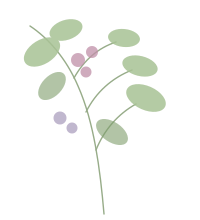
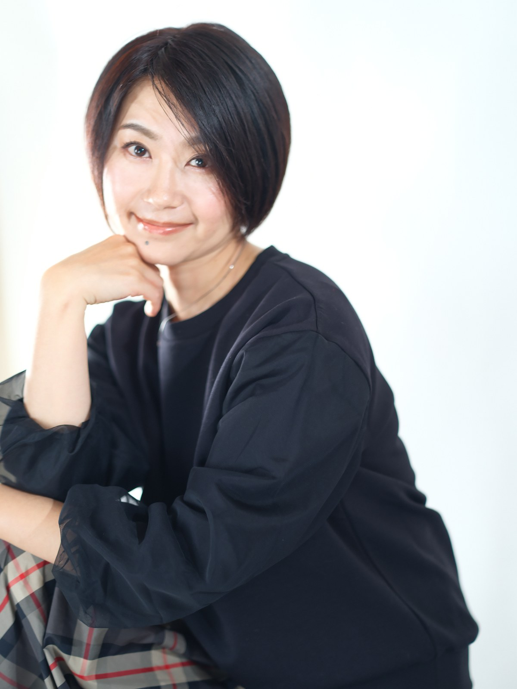

私たちがつくりたいのは、便利な社会ではなく、人が幸せに生きられる社会です。
現代は便利になった一方で、多くの人が時間に追われています。
ITやAIが進化しても、人が幸せにならなければ意味がない。
だから私たちは、テクノロジーを、
人を忙しくするためではなく、人を人らしくするために使いたい。
数字、業務、IT、AI、仕組み。
そして、心、信頼、人間関係、直感、職場の空気。
会社には、目に見えるものと、目には見えないものがあります。
私たちは、その両方を大切にしています。
最先端の技術 × 古くから受け継がれてきた智慧
AIやITだけに偏らない。精神論だけにも偏らない。
西洋的な合理性と、東洋・日本的な人間観。
どちらも否定せず、必要なものをつなぐ。

代表取締役 ／ 平澤 利佳
私は18年以上、人の心や潜在意識、身体、自律神経を整える仕事に携わってきました。 カウンセリングを通して多くの方と向き合うなかで、見える部分だけでは解決しない人の問題を、たくさん見てきました。
やがて、個人の悩みの多くが、その人が身を置く「会社」や「働き方」とつながっていることに気づきます。 そこから私は、人だけでなく、会社や社会の仕組みそのものに目を向けるようになりました。
人を整えるだけでも足りない。仕組みを整えるだけでも足りない。
その両方を一緒に整えてはじめて、会社は自然に回りはじめる。
それが、今の事業にたどり着いた理由です。
人が本来の姿に戻り、
日本の良さを次の世代へつないでいくこと。
業務改善／IT・AI活用／システム開発／組織づくり／経営者のコンディショニングを通して「働く環境」を整えます。
会社が整うと「もっと自分らしく生きたい」「心や身体も整えたい」という声が生まれます。本質回帰セッション、呼吸・瞑想、心身のコンディショニングへ。
お墓参りの意味、ご先祖供養、真言密教の智慧、自然との共生、子どもへの教育。受け継いできたものを、次の世代へ。
日本には、古くから「三方よし」という近江商人の考え方があります。
「売り手よし、買い手よし、世間よし」
自社だけが良くなるのではなく、関わるすべての人が幸せになることを目指す考え方です。
また、稲盛和夫氏は「人として何が正しいかを判断基準にする」という言葉を大切にされていました。 私たちも、この考え方に深く共感しています。
効率だけを追い求める西洋的な経営ではなく、
人とのつながりや思いやりを大切にする東洋的な価値観も取り入れながら、
ITやAIという新しい技術を、人がより人らしく働くために活かしていく。
それが私たちの考える、これからの会社づくりです。
私たちが本当に残したいのは、システムではありません。
人が笑顔で働ける会社。
次の世代にも受け継がれていく、強くてあたたかい組織。
「何をお願いすればいいのか分からない」「システムが必要なのかも分からない」
そんな状態でも大丈夫です。お話を伺いながら、一緒に整理していきます。